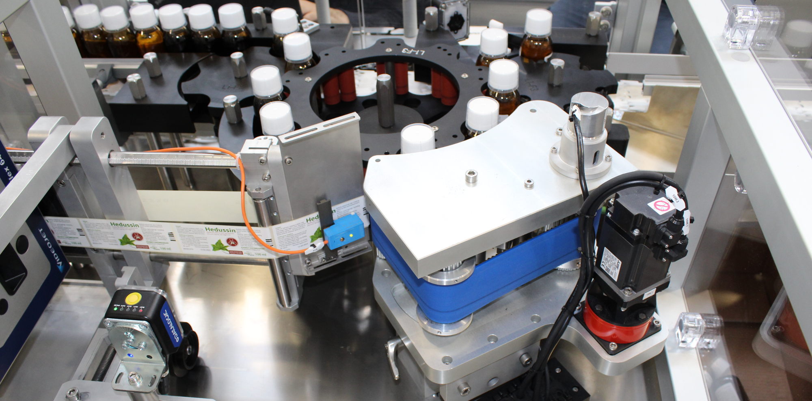

Corso di Laurea in INGEGNERIA INFORMATICA
Progettazione e Sviluppo di una Etichettatrice ad alta velocità per il settore Farmaceutico
Relatore
Costanzo Manes
Correlatore
Ing. Mario Cipolla
Studente
Anthony Daniel Torretti
Esperienza di Tesi e Tirocinio
Settore dell'Automazione Industriale
Sviluppo di Macchinari Automatizzati per l'Industria Farmaceutica
Fasi di Sviluppo Macchinario Industriale
- Progettazione Meccanica
- Progettazione Elettrica ed Elettronica
- Progettazione e Sviluppo Software
Ognuna di queste fasi di sviluppo non è sequenziale bensì soggetta ad Iterazioni
Ogni fase potrebbe richiedere la reiterazioni in fasi precedenti
Sviluppo Iterativo in ambito Industriale
Progettazione e Sviluppo Software
Studio Processo e Schemi Elettrici
- Studio del Processo del Macchinario
Richiede una Buona Base di Conoscenza Meccanica


Studio Processo e Schemi Elettrici
- Studio ed Analisi degli Schemi Elettrici
Studio della Comunicazione con i vari Dispositivi
- Azionamenti Mitsubishi PROFINET
- Datalogic P-Series Camera PROFINET & STANDARD I/O
- Sick Encoder PROFINET
- VideoJet Dataflex Printer TCP/IP & STANDARD I/O
- Etichettatrice HERMA STANDARD I/O
- Inverter di Frequenza Mitsubishi STANDARD & ANALOG I/O
Configurazione del PLC e dei Dispositivi Associati
Bisogna ricreare nel tool di sviluppo l'esatta configurazione
del Sistema come da Schema Elettrico

Configurazione Del Rack Del PLC
Nello specifico tool di sviluppo si inizializza il progetto importando i dispositivi
partendo dal Rack del PLC
- Setup Dispositivo PLC
- PLC Siemens ET200 CPU 1510SP
- Setup Moduli I/O
- 2x Moduli di 16 Ingressi Digitali
- 3x Moduli di 16 Uscite Digitali
- 1x Modulo di 4 Uscite Analogiche
Profinet Network Setup
Configurazione della Rete Profinet del Sistema mediante assegnazione di
Indirizzi e Nomi Dispositivo
Analisi e Progettazione Processo PLC
Progettazione e Design della struttura del software
- Struttura Generale del Software
- Gestione Allarmi
- Interfacce di Controllo e Gestione Dispositivi
- Progettazione Metodo Controllo Scarti e Idoneità
- Sequenza del Ciclo Automatico
Struttura Generale del Software
Rispettando gli Standard e Best Practice
Gestione Allarmi
Suddivisione degli Allarmi per Categoria, Competenza e Criticità
Interfacce di Controllo e Gestione Dispositivi
Creazione di Funzioni e Function Block associate a DB o Struct
aventi funzione di Interfacce di Controllo
Controllo Scarti e Idoneità Prodotto
Dipende dalla Tipologia della Macchina Se a Ciclo Continuo o a Fasi
- Macchina a Fasi:Processa un solo pezzo alla volta perciò effettare controlli e gestire lo scarto risulta molto più semplice
- Macchina a Ciclo Continuo:Non è gestita da Fasi pertanto non è necessario attendere che sia conclusa l'elaborazione del pezzo precedente per iniziarne un altro
Controllo Scarti e Idoneità Prodotto
Macchina a Ciclo Continuo : Camme DigitaliSimili come funzionamento alle Camme Meccaniche ma dipendenti
da Gradi Macchina letti da un Encoder

Controllo Scarti e Idoneità Prodotto
Macchina a Ciclo Continuo : Shift RegisterSoluzione al Traking dei prodotti all'interno della macchina al fine di determinarne lo stato

Sequenza del Ciclo Automatico
Progettazione della logica di funzionamento in Automatico della Macchina
Cosa accade quando viene premuto il pulsante di START
Sviluppo Processo PLC
Implementazione Ciclo Automatico in modo sequenziale
- Commutazione della macchina nello stato Automatico
- Attesa di Start da parte dell'operatore
- Shift dei Registri macchina
- Controllo Presenza Flacone Stella in Ingresso
- Trigger Etichettatrice (Espulsione Etichetta)
- And Logico Shift Controllo OCR e Presenza
- Trigger Stampante
- Trigger Telecamera Controllo OCR
- Trigger Telecaera Controllo Allinemaneto
- Gestione Scarto Flacone non conforme

Sviluppo Sistema Di Visione
Varia a seconda del produttore del Sistema di Visione ma la struttura generale è pressochè simile per i leader del mercato
- Manipolazione Immagine Mediante Filtri
- Impostazione Locatore
- Impostazione Tool di Ispezione
- Scrittura Output Risultato al PLC
Locatore e Tool di Ispezione
Ricavare un sistema di riferimento relativo alla posizione dell'oggetto da analizzare

Output Risultato al PLC
Al termine dell'elaborazione, il risultato deve essere inviato al PLC

Analisi e Setup Pannello Operatore
Analisi Requisiti e Campo di Applicazione
- Studio dei Requisiti Sistema
- Analisi Dell'Hardware e Software a Disposizione
- Studio Normative Vigenti nel campo di applicazione
- 21CFR Part11 - Farmaceutico
- Studio dell'Infrastruttura di rete del Cliente
Analisi e Setup Pannello Operatore
Setup Pannello Operatore
- Configurazione Rete e Comunicazioni
- Installazione Driver Di Comunicazione PLC
- Setup VPN per Manutenzione Remota
- Installazione di Eventuali Add-Ons
- Database Managment System
- WebServer
- Framework
- Reporting Server
- Messa in Sicurezza del Sistema Operativo
Sviluppo dell'interfaccia HMI
Lo sviluppo dell'interfaccia HMI è una delle fasi che impiega più tempo
Senza un Interfaccia utente ben progettata il macchinario potrebbe risultare inutilizzabile

Sviluppo dell'interfaccia HMI
Aspetti Principali da rispettare per un interfaccia Operatore
- Semplicità di Uso ed Intuitività
- Schermate specifiche per diversi Operatori
- Grafiche Animate che somgliano il più possibile al reale processo macchina
- Segnalazione di Allarmi e situazioni critiche ben visibili
- Supporto al Multilingua
- Gestione Lotti e Statistiche Macchina Semplice e Robusta
Sviluppo dell'interfaccia HMI
Simulazione Runtime HMI Labeltech
Documentazione e Manuale Operatore
Descrizione dettagliata dei componenti macchina, Sicurezza, Manutenione, HMI . . .